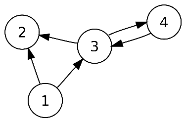
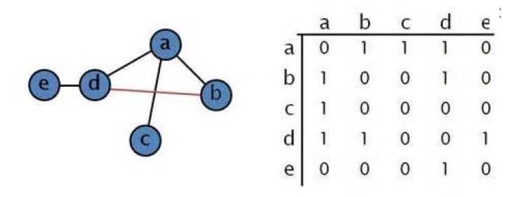
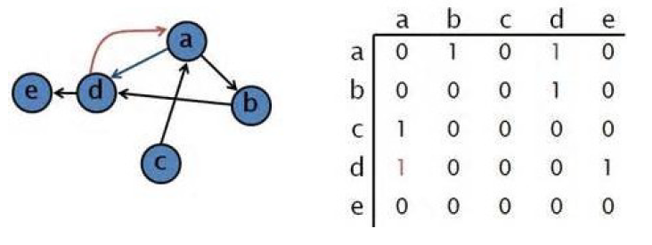

Les graphes⚓︎
Activité de présentation⚓︎
Bilan⚓︎
Défintion⚓︎
Un graphe est la représentation théorique d'une situation réelle mais abstraite.
Exemples
Plan de métro
réseau routier
réseau d'amis ou d'influence sur les réseaux sociaux
...
Vocabulaire⚓︎
Les noeuds sont appelés sommets, reliés par des arêtes. Les arêtes sont aussi appelées arcs si elles sont orientées.
Graphe non-orienté : les arêtes sont parcourues dans les deux sens.

graphe orienté : les arcs ne peuvent être parcourus que dans un sens.
Graphe connexe : un graphe est connexe si on peut aller d'un sommet à l'autre quel que soit le chemin emprunté.
Graphe complet un graphe est dit complet si chaque sommet est directement relié à tous les autres.
voisins : Les voisins d'un sommet sont les sommets reliés par une seule arrête.
successeur : les successeurs sont les voisins d'après.
prédécesseurs : Les prédécesseurs sont les voisins précédent.
matrice d'adjacence⚓︎

La matrice d'adjacence est un tableau à double entrée qui définit les liens entre les noeuds. Si le graphe est orienté, les colonnes sont les successeurs du noeud de la ligne courante. Si le graphe est non-orienté, la matrice est symétrique et les informations sont données en double (il faudra en tenir compte au moment de l'implémentation si l'on veut limiter la complexité de notre programme).

Représenter en python la matrice d'adjacence⚓︎
On peut représenter la matrice en python avec différentes structure, comme :
- la liste
- le dictionnaire
- l'instance de classe
Exercices sur les graphes⚓︎
Implémenter les graphes en python⚓︎
Se rendre sur Capytale et saisir le code d'activité 24b4-33046.